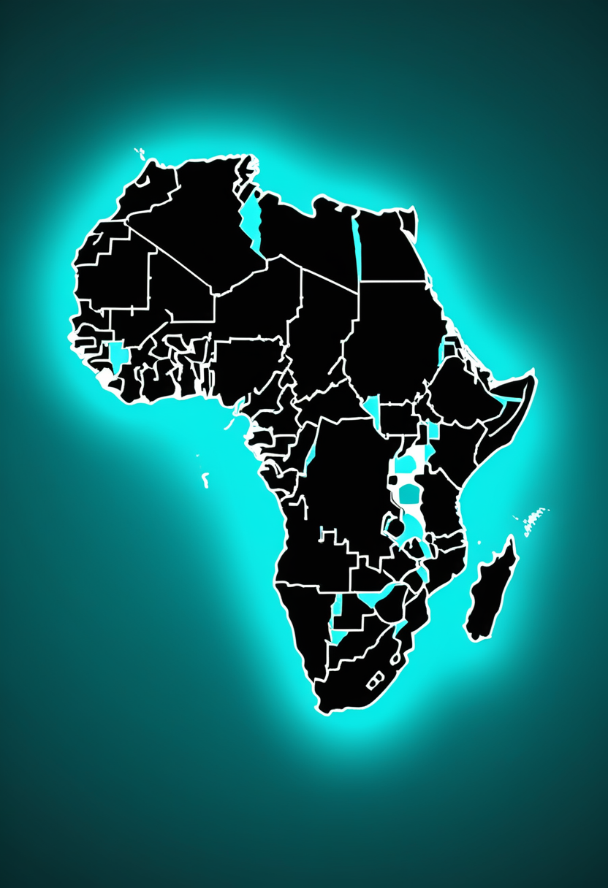
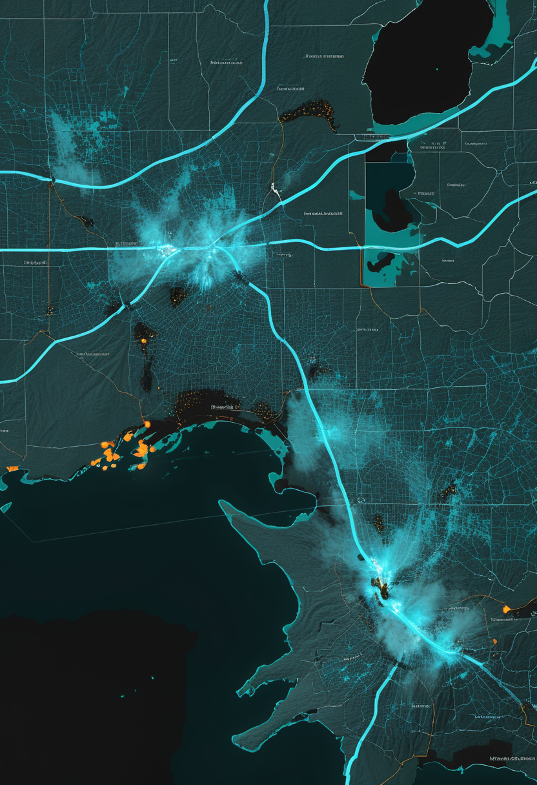
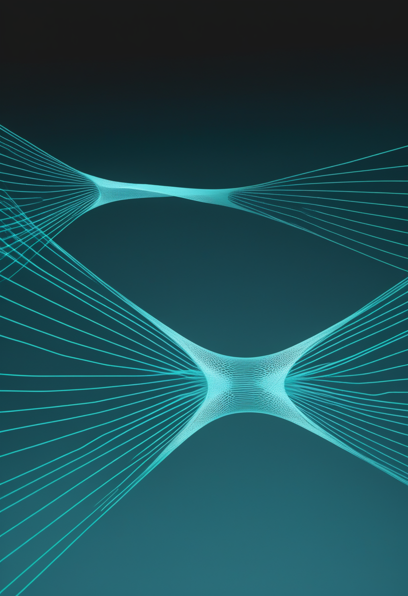
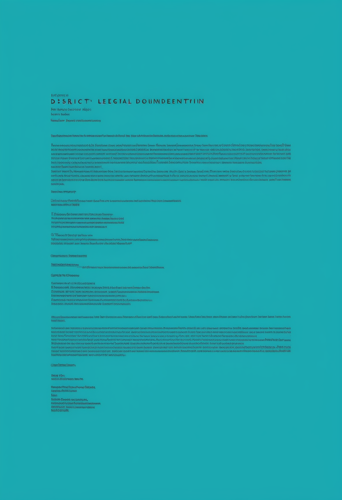

金曜日の便り。コンゴ民主共和国(DRC)のエボラ(ブンディブギョ型)は9月1日までの集計で確定6,250例・死亡3,039人に達し、前号(8月31日時点)から1日で64例・32人が積み増された。致死率は約48.6%で高止まりが続く。自由の章では、埋め込み型BCIを研究者の立ち会いなしに自宅で3,800時間超使い続けたBrainGate2試験の実使用データと、Paradromicsが421電極の『Connexus』を初めてヒトへ埋め込んだ発話再建試験を報じる。基盤の章では、エボラの続報に加え、コレラの流行でDRCが域内最多の死者を出している実態と、エボラ・コレラ・麻疹が同時に医療体制を圧迫する三重負荷を伝える。畏敬の章では、約90年前にハイゼンベルクらが予言した『真空複屈折』にマグネターの観測で最有力の証拠が得られたことと、LHCの酸素・ネオン衝突が原子核の形をそのまま流体の流れに刻み出したことを紹介する。美の章では、故人を模したAI『グリーフボット』の心理的リスクを問う系統的レビューと、生きた脳のBCI較正に使う『ニューラル・デジタルツイン』という実務的な構想を取り上げる。命の章では、FDA判断まで残り26日となったアピテグロマブの供給体制と、年1回投与を狙うサラネルセンが具体的な3試験体制に入ったことを伝える。
9/3号の続報 ― コンゴ民主共和国(DRC)のブンディブギョ型エボラは、9月1日までのデータで確定6,250例・死亡3,039人に達した。前号で報じた8月31日時点の6,186例・3,007人から、1日で+64例・+32人が積み増された。致死率は約48.6%で前号とほぼ同じ水準にとどまり、検出網が追いつかないまま母数だけが増える局面が続いている。新規64例の内訳はイトゥリ州39例、北キブ州20例、オー・ウエレ州4例、チョポ州1例。回復1,439人、隔離入院869人。ワクチンも特異的治療薬も存在しない型で、5月17日にはPHEIC(国際的に懸念される公衆衛生上の緊急事態)が宣言されたままだ。
Scholar Rockの筋標的薬アピテグロマブは、FDAのアクション日(PDUFA)である9月30日まで本日で残り26日となった。同社は、充填・仕上げ工程について第2の施設に関するデータパッケージを提出済みで、承認判断に至る独立した2系統の経路が並行していると説明する。商業化に十分な供給も確保済みで、『9月30日までのいつ承認が下りても直ちに米国で発売できる』体制だという。承認されれば、SMN(運動ニューロン生存)を増やす既存薬に上乗せする、世界初の筋標的療法となる。
Biogenの次世代アンチセンス核酸サラネルセンは、ヌシネルセンと同じ機序を保ちながら骨格の化学修飾で効力を高め、年1回投与を目指す。2026年3月のMDA学会で示された第1b相では、遺伝子治療後に反応が不十分だった小児で運動機能の臨床的に意味のある改善と神経変性の緩徐化が観察され、FDAはブレークスルーセラピー指定を与えた。第3相は3試験構成で、生後6週未満・治療歴なしの発症前乳児を対象とするSTELLAR-1と、15〜60歳を対象とするSOLARが登録中、無作為化二重盲検シャム対照のSTELLAR-2は2026年6月から登録開始の予定とされている。
日本ではヌシネルセン(2016年)、オナセムノゲン アベパルボベク(2019年)、リスジプラム(2020年)の3剤が公的医療保険下で使える。リスジプラムは2021年に日本で承認され、2024年には発症前のSMA患者および生後2か月未満への投与が適応に追加された。発症前に治療を始められるかどうかは新生児スクリーニングの整備に直結し、日本を対象とした費用効用分析はSMA新生児スクリーニングの導入を経済的に支持している。兵庫県など先行地域の実績報告も蓄積されつつある。なお本日時点で、直近1〜2週間の日本国内の新規承認・保険収載の動きは確認できなかった(最新取得できず)。
9月30日は『SMNを増やす薬』に『筋肉を戻す薬』を足せるかが決まる日であり、二系統の承認経路が示すのは、Scholar Rockがすでに『いつ承認されても即応できる』体制固めを終えている段階にあることだ。サラネルセンの3試験体制は、年齢層ごとに異なる問いを同時に検証しようとしている。だが日本の患者にとって効くのは承認そのものより、発症前に見つける仕組みが全国に行き渡るかどうかである。
Nature Medicineに掲載された研究は、ALSによる重度の構音障害がある男性(BrainGate2試験の参加者、47歳)が、埋め込み型BCIを研究者の立ち会いなしに自宅で3,800時間超・約2年にわたって使用したと報告した。この間に183,060文(約200万語)を伝達し、平均速度は56語/分、92%の文が『概ね正しい』以上と評価された。構造化された評価では、12万5,000語を超える語彙から単語精度99%超を達成している。単一神経細胞の分解能で記録された個人のデータセットとしては最大規模とされる。試験室での最高性能ではなく、生活の中での持続性が示された点が新しい。
Paradromicsは2026年6月、同社の高密度微小電極アレイ『Connexus』をFDA承認下の試験で初めてヒトに埋め込んだと発表した。対象は運動ニューロン疾患で発話が困難な女性で、ミシガン大学のMatthew Willsey医師らが執刀した。Connexusは421本の微小電極で個々の神経細胞の信号を捉え、胸部の送受信機を介して体外へ無線伝送する構成をとる。試験は長期安全性を主眼とするConnect-One早期実現可能性試験(EFS)で、FDAは2025年11月に発話再建を目的とする本試験を承認していた。
視線入力の応用は、文字盤やAAC(補助代替コミュニケーション)を超えて支援ロボットアームの制御へ広がりつつある。ジョイスティックや頭部制御が使えない閉じ込め症候群などの重度障害者にとって、視線は残された数少ない高帯域の出力チャネルであり、日常タスク支援における視線駆動制御の研究が続いている。一方で、視線は『見ること』と『選ぶこと』を区別できないため、注視滞留(ドウェル)による確定は誤選択と眼の疲労を招きやすく、視距離に応じてターゲットを適応させるなどの改良が必要とされる。製品側では、Tobii Dynavoxが屋外でも使える視線入力を実装するなど、実生活での可用性を広げる動きが続く。
BCIの評価軸が『何語/分出せるか』から『何時間、研究者なしで使い続けられるか』へ移った。3,800時間という数字も、421電極の初移植も、性能指標ではなく生活に組み込まれたことの証明である。視線入力はさらに一歩先、意思を『伝える』ことから物を『動かす』ことへ踏み出しつつあるが、見ることと選ぶことを区別できないという根本の制約はまだ残っている。

WHOとECDCの集計によると、9月1日までの累計は確定6,250例・死亡3,039人。前号で報じた8月31日時点の6,186例・3,007人から、1日で+64例・+32人が上積みされた。致死率は約48.6%で前号とほぼ同じであり、検出網が追いつかないまま母数が伸びている。州別ではイトゥリ州が36保健区中28保健区から5,104例・2,324人、北キブ州が34保健区中15保健区から888例・601人。この2州で全症例の約96%を占める。北キブ州の致死率は約67.7%とイトゥリ州の約45.5%より明確に高く、発見の遅れか重症例への偏りが疑われる。回復は1,439人、隔離入院は869人。
ECDCの月次更新によると、直近の報告期間に新規症例が多かった5カ国はDRC(3,841例)、スーダン(1,502例)、ソマリア(962例)、中央アフリカ共和国(445例)、マラウイ(383例)。国連の8月12日発表では、活発なコレラ流行は西・中央アフリカの6カ国にわたり、累計値ではナイジェリアが5万例超・338人死亡で域内最大、DRCは3万400例超・約700人死亡で域内最多の死者数を記録している。累計値(国連)と月次の新規値(ECDC)は集計の定義が異なるため、単純比較はできない(集計期間は要確認)。

DRCではエボラの流行と並行してコレラと麻疹の流行が継続しており、限られた医療資源が三方向に引かれている。エボラ対応で隔離病床と検査能力が占有されると、コレラの経口補水や麻疹の追加接種といった『本来なら死なせずに済む』疾患の対応が後回しになりやすい。ECDCの週次感染症脅威報告(2026年第35週)も、この地域の複合的な脅威を継続監視対象としている。なお本日時点で、DRCの麻疹の具体的な症例数・死亡数は本実行環境から一次ソースを取得できず、最新値は確認できていない(最新取得できず)。
致死率が動かないまま症例だけが増えるのは、対策が効いていないというより『見つけられている範囲では治療成績が変わっていない』という意味に近い。真に見るべきは州ごとの致死率の差(北キブ約67.7%対イトゥリ約45.5%)であり、コレラは累計と月次という物差しの違いそのものが揺れている。エボラ・コレラ・麻疹が同時に走る局面では、病原体そのものより医療資源の配分が試されている。
強い磁場のもとでは真空そのものが偏光に応じて異なる屈折率を示す ― 量子電磁力学(QED)がハイゼンベルクらによって約90年前に予言しながら未確認だった『真空複屈折』に、最も有力な観測証拠が得られた。電波を放つマグネター1E 1547.0−5408について、X線偏光観測衛星IXPE、NICER、そしてParkes(Murriyang)電波望遠鏡を同時に運用し、位相・エネルギーごとの偏光を測定。熱的成分が支配する軟X線帯で2 keV付近に位相平均65%という高い偏光度を検出し、2〜4 keVで大きく低下する構造と、偏光の向きが電波と同じ形で磁場に固定されている様子を捉えた。ただし2026年4月には、同じIXPEデータを別の放射領域モデルで解析した独立チームが『決定的証拠とは言えない』と結論しており、追加観測が必要な段階にある(要確認)。なお一部報道は偏光度を『最大80%』と記述しており、位相平均値の65%とは指標が異なる(要確認)。
LHCで酸素16同士、ネオン20同士を核子対あたり5.36 TeVで衝突させた実験から、衝突後に飛び散る粒子の流れの向きが、ぶつかる前の原子核の形をそのまま反映していることが示された。酸素同士の衝突では放射状に対称な流れが生じ、四面体的でより球に近い構造を示唆する一方、ネオン同士では細長く非対称な流れが現れ、理論が予測してきた『ボウリングピン』型の核形状と一致した。軽イオン衝突で核の幾何構造が異方的フローを駆動することの明確な証拠は初めてで、成果はPhysical Review Lettersに発表された。なお同じ酸素・ネオン衝突については、7月24日にALICE・ATLAS・CMS・LHCbの4実験がそろってクォーク・グルーオン・プラズマの兆候を報告している。
真空複屈折も核の形も、『何もない空間』『点のような核』という素朴な描像を観測が塗り替えた例である。どちらも約90年、あるいはそれ以上前の理論的予言が、ようやく観測の解像度に追いつかれつつある局面にある。
故人を模したAI(グリーフボット)やAIアバターに関する系統的レビューが相次いで公表され、遷延性悲嘆の症状、感情的な過依存、アイデンティティの混乱という心理的リスクが一貫して報告されている。とくに喪失を処理しきれていない脆弱な利用者で懸念が大きい。一方でこれらのツールは、故人との絆を『断ち切る』ことを前提としてきた従来の悲嘆モデルに対し、デジタルに媒介された『継続する絆』を可能にするという評価もあり、単純な善悪では切れない。レビューはいずれも、臨床的知見を踏まえた倫理的な設計指針の必要性を結論としている。

死後に自分を模したAIを残すことは、すでに現実の選択肢になっている。生成AIを使ったデジタル・アフターライフ技術に関する系統的レビューは、死後の同意をどう取るか、データの管理責任を誰が負うか、『デジタル遺言』を法的にどう定義するかがいずれも曖昧なままであり、技術が規制の枠組みを追い越していると指摘する。関連する法的検討でも、生前に本人が作った『AIクローン』の帰属や、時間の経過とともに応答が本人から乖離していく問題(ドリフト)への手当てが未整理であることが論じられている。
人間のデジタル化をめぐる研究の実務的な着地点として、個人の脳の観測データから本人固有のモデルを作り、BCIの較正と適応に使う『ニューラル・デジタルツイン』の構想が提案されている。狙いは意識の再現ではなく、日々変動する神経信号に対してデコーダを追従させ、再訓練の負担を減らすことにある。前号で扱った『デジタルツイン脳の律速は計算力ではなく計測』という論点と地続きだが、目的を臨床的な有用性に絞ることで、検証可能な形に問題を小さくしている点が異なる。
『人間のデジタル化』の議論の重心が、死後の自分をどう残すかという文化的な問いと、生きている脳をどう較正するかという工学的な問いに、はっきり二分してきた。前者は法が、後者は計測が律速している。グリーフテックの心理的リスクも、AIアフターライフの法的空白も、技術が先に走り規範があとから追いつく同じ順序をたどっている。
金曜日の便り。コンゴ民主共和国のエボラ(ブンディブギョ型)は9月1日までの集計で確定6,250例・死亡3,039人に達し、前号から1日で+64例・+32人の増加が続いたことを伝えた。自由の章では、BrainGate2試験の在宅3,800時間データとParadromicsのConnexus初移植という、埋め込み型BCIの実生活での持続性を示す2つの報告と、視線入力がロボットアーム制御へ広がる動きを紹介した。基盤の章では、エボラの続報に加え、コレラの新規症例国別内訳と、DRCがエボラ・コレラ・麻疹の三重負荷に直面している実態を伝えた。畏敬の章では、約90年前の予言『真空複屈折』にマグネターの観測で最有力の証拠が得られたことと、LHCの酸素・ネオン衝突が原子核の形を粒子の流れに刻み出したことを紹介した。美の章では、グリーフテックの心理的リスクを問う系統的レビューと、AIによる死後の自分の法的空白、そしてBCI較正に使う『ニューラル・デジタルツイン』という構想を取り上げた。命の章では、FDA判断まで残り26日となったアピテグロマブの二系統承認経路と、3試験体制に具体化したサラネルセンを伝えた。
では、また明日の朝に。 — JaH